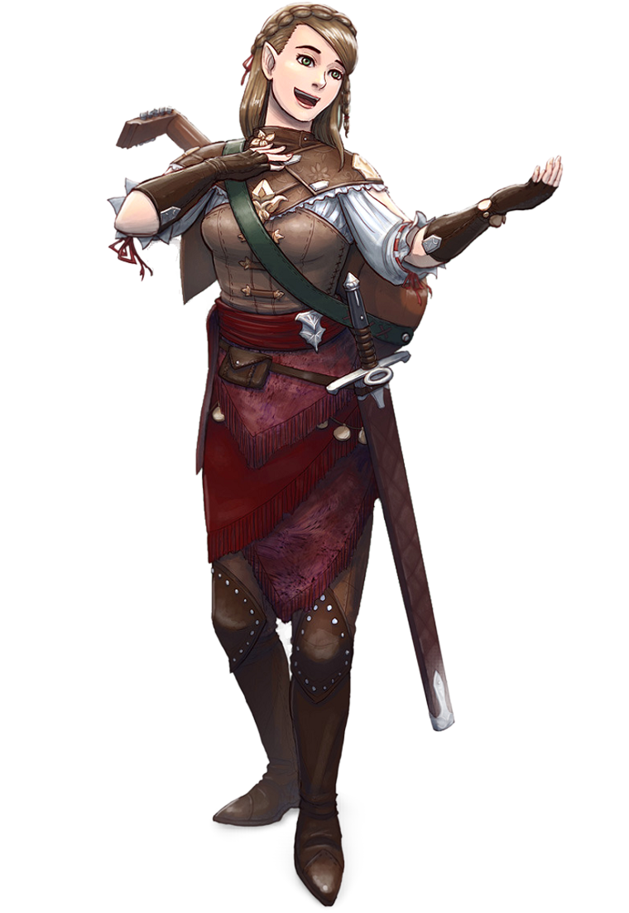

Bardo (Bard)

Cantarolando enquanto passa os dedos sobre um monumento antigo em uma ruína há muito esquecida, uma meio-elfa vestida de couro áspero encontra o conhecimento surgindo em sua mente, conjurado pela magia de sua canção - o conhecimento das pessoas que construíram o monumento e o conhecimento das pessoas que construíram o monumento. saga mítica que retrata.
Um severo guerreiro humano bate sua espada ritmicamente contra sua cota de malha, estabelecendo o ritmo de seu canto de guerra e exortando seus companheiros à bravura e ao heroísmo. A magia de sua canção os fortalece e os encoraja.
Rindo enquanto afina sua cítara, um gnomo tece sua magia sutil sobre os nobres reunidos, garantindo que as palavras de seus companheiros serão bem recebidas.
Seja erudito, skald ou canalha, um bardo tece magia através de palavras e música para inspirar aliados, desmoralizar inimigos, manipular mentes, criar ilusões e até mesmo curar feridas.
Música e Magia:
Nos mundos de D&D, palavras e música não são apenas vibrações do ar, mas vocalizações com poder próprio. O bardo é um mestre da música, da fala e da magia que eles contêm. Os bardos dizem que o multiverso surgiu, que as palavras dos deuses lhe deram forma e que os ecos dessas Palavras primordiais da Criação ainda ressoam por todo o cosmos. A música dos bardos é uma tentativa de capturar e aproveitar esses ecos, sutilmente entrelaçados em seus feitiços e poderes.
A maior força dos bardos é sua versatilidade. Muitos bardos preferem ficar à margem do combate, usando sua magia para inspirar seus aliados e impedir seus inimigos à distância. Mas os bardos são capazes de se defender em combate corpo a corpo, se necessário, usando sua magia para reforçar suas espadas e armaduras. Seus feitiços tendem a encantamentos e ilusões, em vez de feitiços flagrantemente destrutivos. Eles têm um amplo conhecimento de muitos assuntos e uma aptidão natural que lhes permite fazer quase tudo bem. Os bardos tornam-se mestres nos talentos que pretendem aperfeiçoar, desde a performance musical até o conhecimento esotérico.
Aprendendo com a Experiência:
Os verdadeiros bardos não são comuns no mundo. Nem todo menestrel cantando em uma taverna ou bobo da corte brincando na corte real é um bardo. Descobrir a magia escondida na música requer muito estudo e algum talento natural que falta à maioria dos trovadores e jograis. No entanto, pode ser difícil identificar a diferença entre esses artistas e os verdadeiros bardos. A vida de um bardo é passada vagando pela terra coletando conhecimentos, contando histórias e vivendo da gratidão do público, assim como qualquer outro artista. Mas um profundo conhecimento, um nível de habilidade musical e um toque de magia diferenciam os bardos de seus companheiros.
Raramente os bardos se estabelecem em um lugar por muito tempo, e seu desejo natural de viajar – para encontrar novas histórias para contar, novas habilidades para aprender e novas descobertas além do horizonte – torna a carreira de aventureiro uma vocação natural. Cada aventura é uma oportunidade de aprender, praticar uma variedade de habilidades, entrar em tumbas há muito esquecidas, descobrir obras de magia perdidas, decifrar tomos antigos, viajar para lugares estranhos ou encontrar criaturas exóticas. Os bardos adoram acompanhar os heróis para testemunhar seus feitos em primeira mão. Um bardo que consegue contar uma história inspiradora por experiência própria ganha renome entre outros bardos. Na verdade, depois de contar tantas histórias sobre heróis realizando feitos poderosos, muitos bardos levam esses temas a sério e assumem papéis heróicos.
Criando um Bardo:
Os bardos prosperam com histórias, sejam elas verdadeiras ou não. A formação e as motivações do seu personagem não são tão importantes quanto as histórias que ele conta sobre eles. Talvez você tenha tido uma infância segura e mundana. Não há nenhuma boa história para contar sobre isso, então você pode se imaginar como um órfão criado por uma bruxa em um pântano sombrio. Ou sua infância pode ser digna de uma história. Alguns bardos adquirem sua música mágica através de meios extraordinários, incluindo a inspiração de fadas ou outras criaturas sobrenaturais.
Você serviu como aprendiz, estudando com um mestre, seguindo o bardo mais experiente até estar pronto para seguir em frente por conta própria? Ou você frequentou uma faculdade onde estudou conhecimento bárdico e praticou magia musical? Talvez você fosse um jovem fugitivo ou órfão, amigo de um bardo errante que se tornou seu mentor. Ou você pode ter sido uma criança nobre e mimada, ensinada por um mestre. Talvez você tenha tropeçado nas garras de uma bruxa, negociando um presente musical além de sua vida e liberdade, mas a que custo?
Tabela do Bárbaro:
| Nível | Bônus de Proficiência | Benefícios | Truques Conhecidos | Feitiços Conhecidos | Espaços de Feitiço por Nível de Feitiço | ||||||||
|---|---|---|---|---|---|---|---|---|---|---|---|---|---|
| 1st | 2nd | 3rd | 4th | 5th | 6th | 7th | 8th | 9th | |||||
| 1st | +2 | Conjuração, Inspiração Bárdica(d6) | 2 | 4 | 2 | - | - | - | - | - | - | - | - |
| 2nd | +2 | Versatilidade, Som do Descanso(d6) | 2 | 5 | 3 | - | - | - | - | - | - | - | - | 3rd | +2 | Colégio dos Bardos, Especialização | 2 | 6 | 4 | 2 | - | - | - | - | - | - | - |
| 4th | +2 | Melhoria na pontuação de Habilidade | 3 | 7 | 4 | 3 | - | - | - | - | - | - | - |
| 5th | +3 | Inspíração Bárdica(d8), Fonte de Inspiração | 3 | 8 | 4 | 3 | 2 | - | - | - | - | - | - |
| 6th | +3 | Contra-feitiço, Benefício do Colégio dos Bardos | 3 | 9 | 4 | 3 | 3 | - | - | - | - | - | - |
| 7th | +2 | - | 3 | 10 | 4 | 3 | 3 | 1 | - | - | - | - | - |
| 8th | +3 | Melhoria de na Pontuação de Habilidade | 3 | 11 | 4 | 3 | 3 | 2 | - | - | - | - | - |
| 9th | +4 | Som do Descanso(d8) | 3 | 12 | 4 | 3 | 3 | 3 | 1 | - | - | - | - |
| 10th | +4 | Inspiração Bárdica(d10), Especialização, Segredos Mágicos | 4 | 14 | 4 | 3 | 3 | 3 | 2 | - | - | - | - |
| 11th | +4 | - | 4 | 15 | 4 | 3 | 3 | 3 | 2 | 1 | - | - | - |
| 12th | +4 | Melhoria de na Pontuação de Habilidade | 4 | 15 | 4 | 3 | 3 | 3 | 2 | 1 | - | - | - |
| 13th | +5 | Som do Descanso(d10) | 4 | 16 | 4 | 3 | 3 | 3 | 2 | 1 | 1 | - | - |
| 14th | +5 | Segredos Mágicos, Benefício do Colégio dos Bardos | 4 | 18 | 4 | 3 | 3 | 3 | 2 | 1 | 1 | - | - |
| 15th | +5 | Inspiração Bárdica(d12) | 4 | 19 | 4 | 3 | 3 | 3 | 2 | 1 | 1 | 1 | - |
| 16th | +5 | Melhoria de na Pontuação de Habilidade | 4 | 19 | 4 | 3 | 3 | 3 | 2 | 1 | 1 | 1 | - |
| 17th | +6 | Som do Descanso(d12) | 4 | 20 | 4 | 3 | 3 | 3 | 2 | 1 | 1 | 1 | 1 |
| 18th | +6 | Segredos Mágicos | 4 | 22 | 4 | 3 | 3 | 3 | 3 | 1 | 1 | 1 | 1 |
| 19th | +6 | Melhoria de na Pontuação de Habilidade | 4 | 22 | 4 | 3 | 3 | 3 | 3 | 2 | 1 | 1 | 1 |
| 20th | +6 | Inspiração Superior | 4 | 22 | 4 | 3 | 3 | 3 | 3 | 2 | 2 | 1 | 1 |
Recursos de Classe:
Como um Bardo, você recebe os seguintes recursos de classe.
Hit Points
Hit Dice: 1d8 por nível de classe.
Hit Points no nível 1: 8 + seu modificador de constituição.
Hit nos níveis mais altos: 1d8 (ou 5) + seu modificador constituição por nível de classe após o primeiro nível.
Proficiências
Armadura: Armadura leve.
Armas: Armas simples (de uma mão), arcos pequenos, espadas longas, rapieiras e espadas curtas.
Ferramentas: três instrumentos musicais da sua escolha.
Salvaguardas: Destreza, Carisma
Habilidades: Escolha quaisquer três.
Equipamento
Você começa com os seguintes equipamentos, somados aos equipamentos garantidos pelo seu background (antecedentes).
(a) uma rapieira, (b) uma espada longa, ou (c) qualquer arma simples (de uma mão).
(a) um pacote do diplomata ou (b) um pacote do artista.
(a) um alaúde ou (b) qualquer outro instrumento musical.
armadura de couro e uma adaga.
Conjuração
Você aprendeu a desembaraçar e remodelar a estrutura da realidade em harmonia com seus desejos e sua música. Seus feitiços fazem parte do seu vasto repertório, magias que você pode sintonizar para diversas situações. Veja Regras de Feitiços para as regras gerais de lançamento de feitiços e a Lista de Feitiços para a lista de feitiços do bardo.
Truques
Você conhece dois truques à sua escolha da lista de magias do bardo. Você aprende truques de bardo adicionais à sua escolha em níveis mais altos, como mostrado na coluna Truques Conhecidos da tabela Bardo.
Espaços de Magia
A tabela Bardo mostra quantos espaços de magia você tem para lançar suas magias de bardo de 1º nível e superiores. Para conjurar uma dessas magias, você deve gastar um espaço do nível da magia ou superior. Você recupera todos os espaços de magia gastos ao terminar um descanso longo.
Por exemplo, se você conhece a magia de 1º nível curar ferimentos e tem um espaço de magia de 1º nível e um de 2º nível disponíveis, você pode conjurar curar ferimentos usando qualquer um dos espaços.
Magias Conhecidas de 1º Nível e Superior
Você conhece quatro magias de 1º nível, à sua escolha, da lista de magias do bardo.
A coluna Magias Conhecidas da tabela Bardo mostra quando você aprende mais magias de bardo de sua escolha. Cada uma dessas magias deve ser de um nível para o qual você possui espaços de magia, conforme mostrado na tabela. Por exemplo, quando você alcança o 3º nível nesta classe, você pode aprender uma nova magia de 1º ou 2º nível.
Além disso, quando você ganha um nível nesta classe, você pode escolher uma das magias de bardo que você conhece e substituí-la por outra magia da lista de magias de bardo, que também deve ser de um nível para o qual você tenha espaços de magia.
Habilidade de Conjuração
Carisma é sua habilidade de conjuração para seus feitiços de bardo. Sua magia vem do coração e da alma que você coloca na execução de sua música ou oração. Você usa seu Carisma sempre que uma magia se refere à sua habilidade de lançar magias. Além disso, você usa seu modificador de Carisma ao definir a CD do teste de resistência para uma magia de bardo que você conjura e ao fazer uma jogada de ataque com uma.
CD para salvar magias = 8 + seu bônus de proficiência + seu modificador de Carisma
Modificador de ataque mágico = seu bônus de proficiência + seu modificador de Carisma
Conjuração por Ritual Você pode lançar qualquer magia de bardo que conheça como ritual se essa magia tiver a etiqueta ritual.
Foco em conjurações Você pode usar um instrumento musical (veja a seção Ferramentas) como foco de conjuração para suas magias de bardo.
Inspiração Bárdica
Você pode inspirar outras pessoas por meio de palavras ou música emocionantes. Para fazer isso, você usa uma ação bônus em seu turno para escolher uma criatura que não seja você, a até 18 metros de você, que possa ouvi-lo. Essa criatura ganha um dado de Inspiração de Bardo, um d6.
Uma vez nos próximos 10 minutos, a criatura pode lançar o dado e adicionar o número obtido a um teste de habilidade, jogada de ataque ou teste de resistência que fizer. A criatura pode esperar até rolar o d20 antes de decidir usar o dado de Inspiração de Bardo, mas deve decidir antes que o Mestre diga se a jogada foi bem-sucedida ou falhou. Assim que o dado de Inspiração de Bardo for lançado, ele será perdido. Uma criatura pode ter apenas um dado de Inspiração de Bardo por vez.
Você pode usar esse recurso um número de vezes igual ao seu modificador de Carisma (no mínimo uma vez). Você recupera quaisquer usos gastos ao terminar um descanso longo.
Seu dado de Inspiração de Bardo muda quando você atinge certos níveis nesta classe. O dado se torna um d8 no 5º nível, um d10 no 10º nível e um d12 no 15º nível.
Versatilidade
A partir do 2º nível, você pode adicionar metade do seu bônus de proficiência, arredondado para baixo, a qualquer teste de habilidade que você fizer que ainda não inclua seu bônus de proficiência.
Som do Descanso
A partir do 2º nível, você pode usar música suave ou oração para ajudar a revitalizar seus aliados feridos durante um breve descanso. Se você ou qualquer criatura aliada que possa ouvir seu desempenho recuperar pontos de vida no final do descanso curto gastando um ou mais Dados de Vida, cada uma dessas criaturas recupera 1d6 pontos de vida extras.
Os pontos de vida extras aumentam quando você atinge certos níveis nesta classe: para 1d8 no 9º nível, para 1d10 no 13º nível e para 1d12 no 17º nível.
Colégio dos Bardos
No 3º nível, você se aprofunda nas técnicas avançadas de um colégio de bardos de sua escolha: o Colégio do Conhecimento detalhado no final da descrição da classe ou outro do Livro do Jogador ou de outras fontes. Sua escolha concede características no 3º nível e novamente no 6º e 14º níveis.
Especialização
No 3º nível, escolha duas de suas perícias. Seu bônus de proficiência é duplicado para qualquer teste de habilidade que você fizer que utilize qualquer uma das perícias escolhidas.
Melhoria na pontuação de habilidade
Quando você atinge o 4º nível e novamente no 8º, 12º, 16º e 19º nível, você pode aumentar um valor de habilidade de sua escolha em 2 ou pode aumentar dois valores de habilidade de sua escolha em 1. Como de costume, você pode' Não aumente um valor de habilidade acima de 20 usando esse recurso.
Usando a regra de talentos opcionais, você pode renunciar a esse recurso para escolher um talento de sua escolha.
Fonte de Inspiração
A partir do 5º nível, você recupera todos os usos gastos de Inspiração de Bardo ao terminar um descanso curto ou longo.
Contra-Feitiço
No 6º nível, você ganha a habilidade de usar notas musicais ou palavras de poder para interromper efeitos de influência mental. Como uma ação, você pode iniciar uma apresentação que dura até o final do seu próximo turno. Durante esse tempo, você e quaisquer criaturas amigas a até 9 metros de você têm vantagem em testes de resistência contra ficarem assustados ou enfeitiçados. Uma criatura deve ser capaz de ouvi-lo para obter este benefício. A apresentação termina mais cedo se você estiver incapacitado ou silenciado ou se você encerrá-la voluntariamente (nenhuma ação é necessária).
Perícia
No 10º nível, escolha mais duas de suas perícias em perícias. Seu bônus de proficiência é duplicado para qualquer teste de habilidade que você fizer que utilize qualquer uma das perícias escolhidas.
Segredos Mágicos
No 10º nível, você adquiriu conhecimento mágico de um amplo espectro de disciplinas. Escolha dois feitiços de qualquer classe, incluindo esta. Uma magia que você escolher deve ser de um nível que você possa conjurar, como mostrado na tabela do Bardo, ou um truque.
As magias escolhidas contam como magias de bardo para você e são incluídas no número da coluna Magias Conhecidas da tabela Bardo.
Você aprende duas magias adicionais de qualquer classe no 14º nível e novamente no 18º nível.
Inspiração Superior
No 20º nível, quando você rola iniciativa e não tem mais uso de Inspiração de Bardo, você recupera um uso.
Colégio dos Bardos:
O caminho de um bardo é gregário. Os bardos procuram uns aos outros para trocar músicas e histórias, gabar-se de suas realizações e compartilhar seus conhecimentos. Os bardos formam associações independentes, que chamam de colégios, para facilitar suas reuniões e preservar suas tradições.
Faculdade de Lore:
Os bardos do Colégio do Conhecimento sabem algo sobre a maioria das coisas, coletando fragmentos de conhecimento de fontes tão diversas quanto tomos acadêmicos e contos camponeses. Seja cantando baladas folclóricas em tavernas ou composições elaboradas nas cortes reais, esses bardos usam seus dons para manter o público fascinado. Quando os aplausos cessam, os membros da audiência podem questionar tudo o que consideram verdadeiro, desde a sua fé no sacerdócio do templo local até à sua lealdade ao rei.
A lealdade desses bardos reside na busca pela beleza e pela verdade, não na lealdade a um monarca ou em seguir os princípios de uma divindade. Um nobre que mantém tal bardo como arauto ou conselheiro sabe que o bardo prefere ser honesto do que político.
Os membros da faculdade se reúnem em bibliotecas e às vezes em faculdades reais, completas com salas de aula e dormitórios, para compartilharem seus conhecimentos uns com os outros. Eles também se reúnem em festivais ou assuntos de Estado, onde podem expor a corrupção, desvendar mentiras e zombar de figuras de autoridade presunçosas.
Bônus de Proficiência
Ao ingressar no College of Lore no 3º nível, você ganha proficiência em três perícias à sua escolha.
Palavras Afiadas
Também no 3º nível, você aprende como usar sua inteligência para distrair, confundir e, de outra forma, minar a confiança e a competência dos outros. Quando uma criatura que você pode ver a até 18 metros de você faz uma jogada de ataque, um teste de habilidade ou uma jogada de dano, você pode usar sua reação para gastar um de seus usos de Inspiração de Bardo, rolando um dado de Inspiração de Bardo e subtraindo o número rolado do rolo da criatura. Você pode escolher usar esse recurso depois que a criatura fizer sua jogada, mas antes que o Mestre determine se a jogada de ataque ou teste de habilidade foi bem-sucedido ou falha, ou antes que a criatura cause seu dano. A criatura estará imune se não puder ouvi-lo ou se estiver imune a ser enfeitiçada.
Segredos Mágicos Adicionais
No 6º nível, você aprende duas magias à sua escolha de qualquer classe. Uma magia que você escolher deve ser de um nível que você possa conjurar, como mostrado na tabela do Bardo, ou um truque. As magias escolhidas contam como magias de bardo para você, mas não contam no número de magias de bardo que você conhece.
Habilidade Incomparável
A partir do 14º nível, quando você faz um teste de habilidade, você pode gastar um uso de Inspiração de Bardo. Role um dado de Inspiração de Bardo e adicione o número obtido ao seu teste de habilidade. Você pode escolher fazer isso depois de lançar o dado para o teste de habilidade, mas antes que o Mestre lhe diga se você teve sucesso ou falhou.